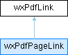

|
wxPdfDocument
1.4.0
Library for generating PDF documents from wxWidgets applications
|
|
wxPdfDocument
1.4.0
Library for generating PDF documents from wxWidgets applications
|
Class representing internal or external links. More...
#include <pdflinks.h>

Public Member Functions | |
| wxPdfLink (int linkRef) | |
| Constructor for internal link. | |
| wxPdfLink (const wxString &linkURL) | |
| Constructor for external link. | |
| wxPdfLink (const wxPdfLink &pdfLink) | |
| Copy constructor. | |
| virtual | ~wxPdfLink () |
| Destructor. | |
| bool | IsValid () const |
| Check whether this instance is a valid link reference. | |
| bool | IsLinkRef () const |
| Check whether this instance is an internal reference. | |
| int | GetLinkRef () const |
| Get the internal link reference. | |
| const wxString | GetLinkURL () const |
| Get the external link reference. | |
| void | SetLink (int page, double ypos) |
| Set page number and position on page. | |
| int | GetPage () |
| Get the page this link refers to. | |
| double | GetPosition () |
| Get the page position this link refers to. | |
Class representing internal or external links.
| wxPdfLink::wxPdfLink | ( | int | linkRef | ) |
Constructor for internal link.
Use this constructor to create an internal link reference.
| wxPdfLink::wxPdfLink | ( | const wxString & | linkURL | ) |
Constructor for external link.
Use this constructor to create an external link reference.
| wxPdfLink::wxPdfLink | ( | const wxPdfLink & | pdfLink | ) |
Copy constructor.
|
virtual |
Destructor.
|
inline |
Get the internal link reference.
|
inline |
Get the external link reference.
|
inline |
Get the page this link refers to.
|
inline |
Get the page position this link refers to.
|
inline |
Check whether this instance is an internal reference.
|
inline |
Check whether this instance is a valid link reference.
|
inline |
Set page number and position on page.